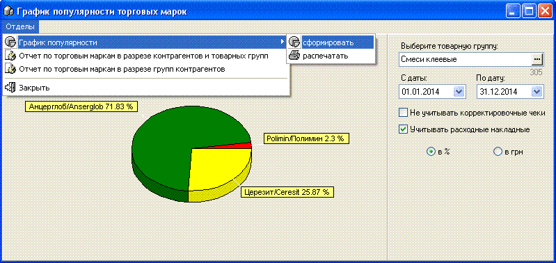
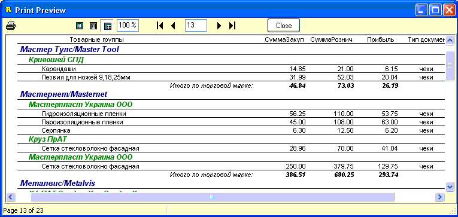

График популярности торговых
марок, кроме основного отчета-графика, позволяющего
проанализировать структуру реализации торговых марок, выбранной товарной
группы, содержит и дополнительные отчеты.
Внешний вид формы показан на рисунке ниже,
остановимся подробнее на используемых критериях отбора.

Для того, чтобы сформировать график, необходимо
выбрать товарную группу из справочника, определить диапазон дат отбора
информации.
Флажек "не учитывать корректировочные чеки" -
флажек включает/выключает отбор сумм корректировочных чеков с обычными чеками.
(Подробнее о таких чека см.раздел справки "Отчеты/Поиск ошибок").
Флажек "Учитывать расходные накладные" -
указывает включать ли в подсчет, кроме чеков, еще и реализацию по этой
товарной группе, сделанную расходными накладными.
Переключатель "в %" или "в грн" - укажите режим
текущего отображения подписей значений графика. Можно переключать в уже
созданном графике.
При необходимости, сформированный график можно
распечатать из соответствующего подменю.
Теперь перейдем к дополнительным
отчетам.
1. Отчет по торговым маркам в разрезе
контрагентов и товарных групп. Из параметров выбираемых на форме
использует только "С даты/По дату" календарики. Позволяет сформировать отчет
по реализации товаров, сгруппировав выборку вначале по Торговым маркам, а
затем по Поставщикам.

2. Отчет по торговым маркам в разрезе
групп контрагентов. Из параметров выбираемых на форме использует
только "С даты/По дату" календарики. Позволяет сформировать отчет по
реализации товаров, сгруппировав выборку вначале по Торговым маркам, а затем
по группам контрагентов. Форма отображения аналогична предыдущему
отчету.